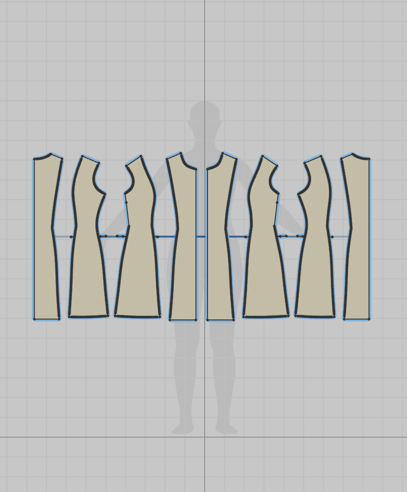
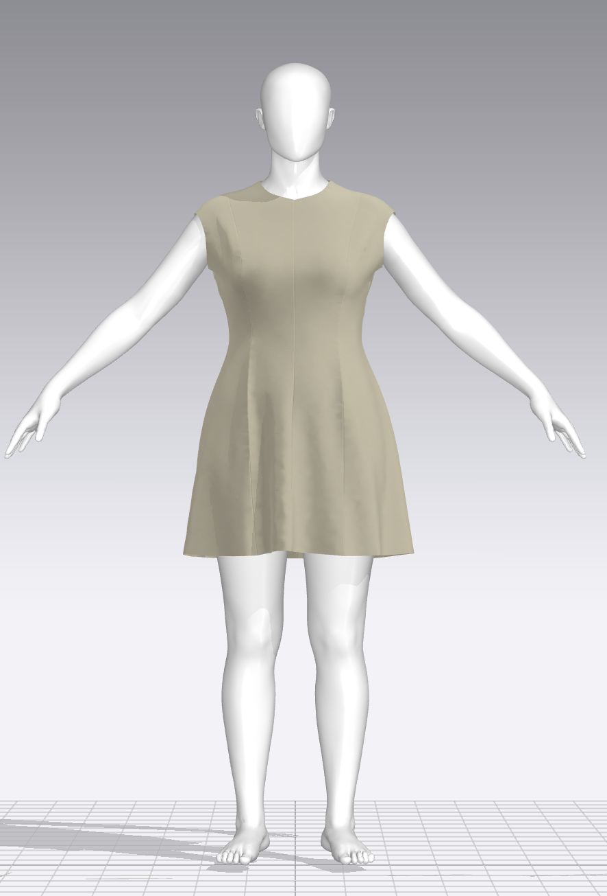
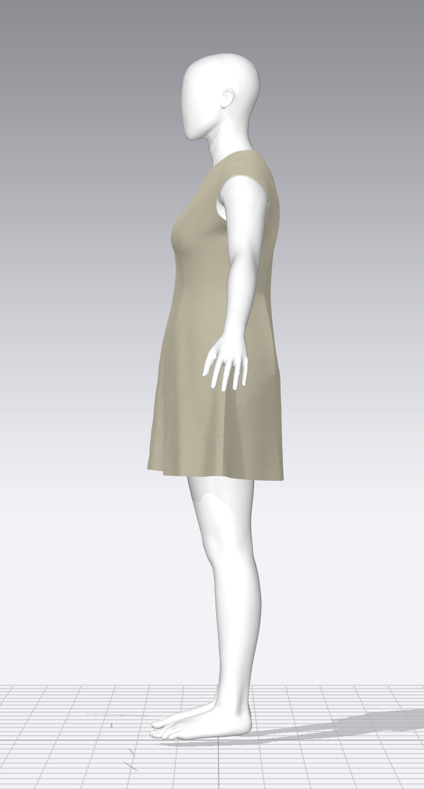
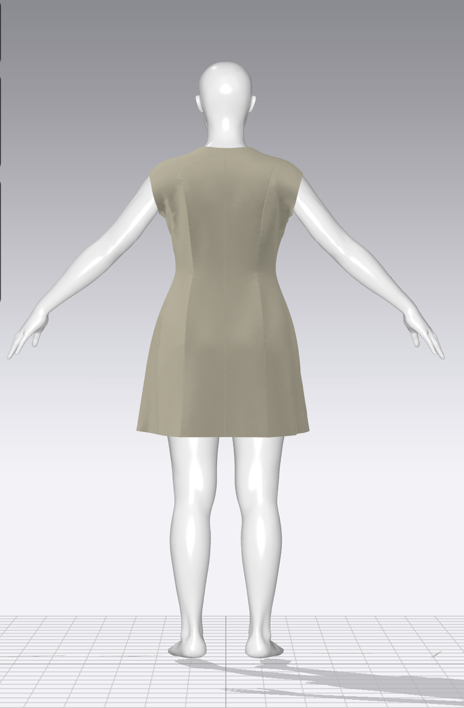
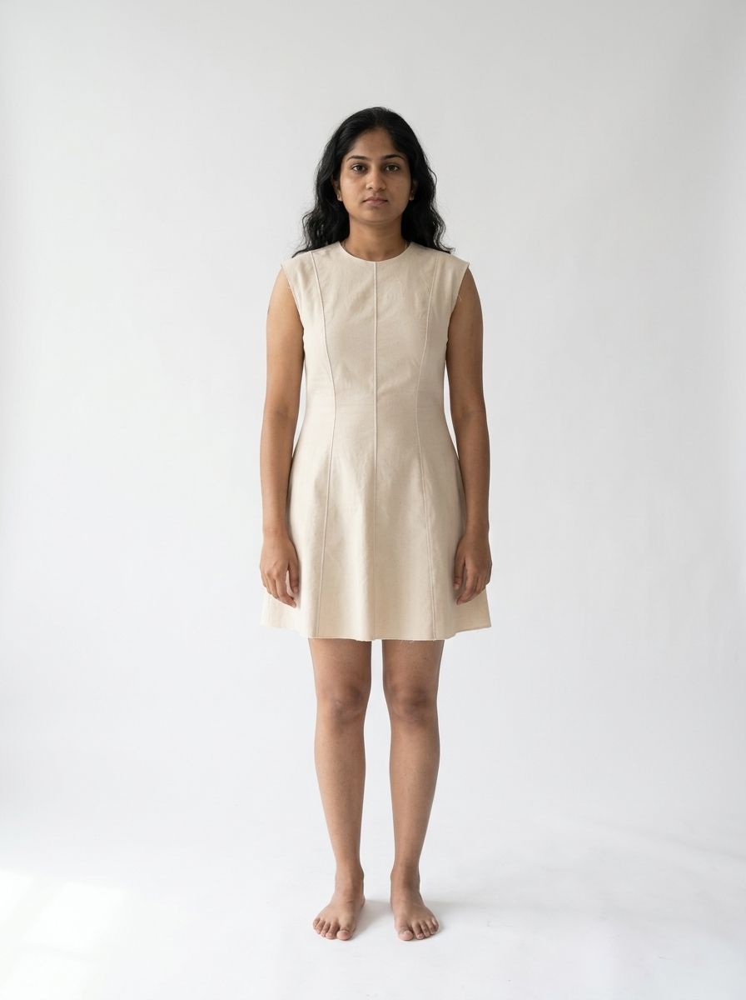
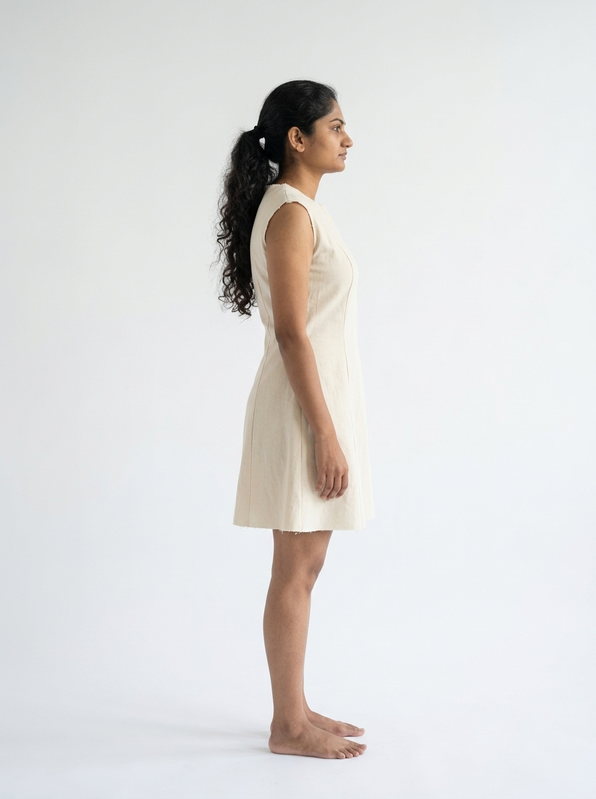

Math Dress / The workflow
From a photograph
to a princess-line dress.
Four steps, connected by the output of each one.
AI estimates the body. MathDress drafts the pattern. CLO simulates the toile. AI visualizes the dress.
- 01
Measure the person
Google Gemini
Image-based measurement
- Input
- A photo of the person with a reference object of known size.
- Method
- Use the reference object to establish scale, then estimate the body’s measurements from the photo.
- Output →
- Bust, waist, hip and back length in centimetres.
Photo measurement · connected
Explore step 01 ↓ - 02
Draft the pattern
MathDress · Princessline
Rule-based pattern drafting
- Input
- The measurements from step 1, plus garment design settings.
- Method
- Calculate the bodice and skirt blocks, then convert them into four princess-line dress panels. Follow the rules and geometry in the construction player.
- Output →
- Four drafted panels; a DXF file for the next step.
Drafter · working
Explore step 02 ↓ - 03
Make the white toile
CLO
3D garment simulation
- Input
- The DXF pattern from step 2 and an avatar matched to the measurements.
- Method
- Import the panels, sew them virtually and simulate a plain white toile—a test garment—to review its shape and fit.
- Output →
- A rendered image of the white toile.
CLO sample · available
Explore step 03 ↓ - 04
Visualize the dress
Google Gemini
Image-guided generation
- Input
- The white toile image from step 3 and a reference photo of the person.
- Method
- Use the toile as a garment reference to generate an image of the person wearing the princess-line dress.
- Output →
- An image of the person wearing the dress.
Visualization sample · available
Explore step 04 ↓
What moves between the steps
Photo + known-size object→Measurements cm→Pattern DXF→White toile image→Dressed-person image
In this prototype Photo measurement uses Gemini with an API key. Review the estimates or enter measurements manually before drafting. CLO and final visualization samples are shown in steps 3 and 4. Image generation is not connected. DXF export at the end of step 2 is planned.
01 / Gemini · body measurements
The body comes first.
Sample photos and supplied measurements · 94 / 70 / 98 / 38 cm. Replace the front and side photos to measure a new person.
Use a full-body front photo with a complete reference object of known size in the same plane as the body. Add a side view to improve circumference estimates. JPEG, PNG or WebP · up to 8 MB each.
Gemini connection settings
Checking connection…
The key stays in this page for the current session; it is not saved in browser storage.
Selecting a file previews it locally. “Estimate measurements” sends the selected photos to Google Gemini.
Try a demo measurement set
Sample data from GDGAIEvent-main; no photo analysis or API key required.
01 / Measure → review → draft
Estimate your measurements from photos, review the values below, then use them to draft the dress.
Back length is measured from the centre-back neck base to the natural waist. If it cannot be estimated from the photos, the current value is retained for you to check. These values drive both the construction player and the finished pattern.
02 / Rules in motion
Two blocks. One continuous dress.
Follow the bodice and skirt into the princess-line system.
Section 1 measurements · actual bodice, skirt and dress geometry. Construction layers are revealed in sequence; the presentation does not simulate cloth or claim physical fit.
Open full drafting tool ↗02 / Drafted pattern
The completed pattern.
The same four panels shown in step 22 · stitch outlines, sewing marks and grainlines.
03 / DXF → CLO · garment study
From pattern to volume.
The princess-line dress is now in CLO. These views show the sewn garment on an avatar, alongside the flat panels used to construct it.
CLO / Sample garment
Three views. One pattern.
Supplied CLO screenshots · neutral toile material.

The flat pattern / The assembled garment
Four panel shapes.
Both sides of the dress.
Centre front, side front, side back and centre back are mirrored to form the full garment. The 2D workspace shows their arrangement; the views below show the result after sewing and simulation in CLO.
These images document one CLO sample. The next stage uses a toile image as the garment reference for Gemini.
See the garment views ↓
02 / Front
Neckline, front seams and hem.
View full size ↗
03 / Side
Profile, armhole and side silhouette.
View full size ↗
04 / Back
Back seams and waist shaping.
View full size ↗04 / The dress visualization
The pattern becomes a dress.
From the measured body to the princess-line pattern, through the CLO toile to the final visualization. The front and side views bring the garment back to the person it was drafted for.
The outcome / Front & side
Supplied visualization images
Presentation sample · image generation is not connected.

01 / Front
The neckline, princess seams and flared hem.

02 / Side
The profile, waist shaping and garment length.
Math Dress / From body to dress
A photograph. A pattern.
A dress made visible.
Measurements become geometry. Geometry becomes a garment. Each step carries the same design forward.
Measure → Draft → Simulate → Visualize
Return to the workflow ↑